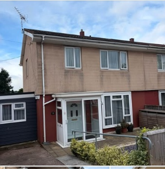
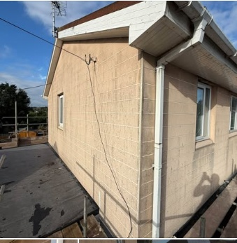

Extensions
Create more room for the way you live, with building work tailored to your home.
From thoughtful extensions to the finishing touches, we help make your home work better for you.
Your home is personal. Whether you're planning more space or improving what you already have, Pete Dunn Builders brings a practical approach and years of building trade experience to the job.
Based in Exeter, we take on a wide range of building work, from extensions and brickwork to patios, fencing and garden rooms. No job too small.

From the first brick to the final detail, we can help with projects inside and out.
Create more room for the way you live, with building work tailored to your home.
Make existing spaces feel more useful, comfortable and inviting.
Practical building and finishing work, from structural details to the little things.
Patios, fencing, garden rooms and drainage to help complete your outdoor space.
Real details from the business's Facebook page.

Insulation and cladding upgrade · Exeter
Building improvements · Exeter
Whether it's a big idea or a smaller job, get in touch to discuss what you need. We'd be happy to hear from you.
Message on WhatsApp ↗